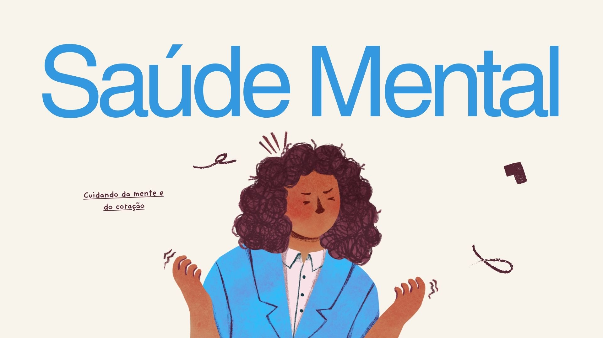

Mente em
Equilíbrio
Pequenas ações ajudam a cuidar da mente e do corpo. Informação, acolhimento e apoio podem fazer a diferença.
Segundo o Ministério da Saúde, a saúde mental não é apenas a ausência de doenças, mas sim um estado de bem-estar onde o indivíduo consegue usar suas próprias habilidades para enfrentar os desafios e o estresse da rotina diária.
Ela é determinada por fatores biológicos, psicológicos e sociais. Isso significa que a realidade socioeconômica, o ambiente e as redes de apoio comunitárias impactam diretamente o nosso equilíbrio emocional. Cuidar da mente é um processo coletivo e um direito fundamental de todos.
0
Visitantes Registrados
+Cuidado
Informação e acolhimento

Sua mente se fortalece quando você se permite cuidar. Ative sua calma.


Sua opinião importa